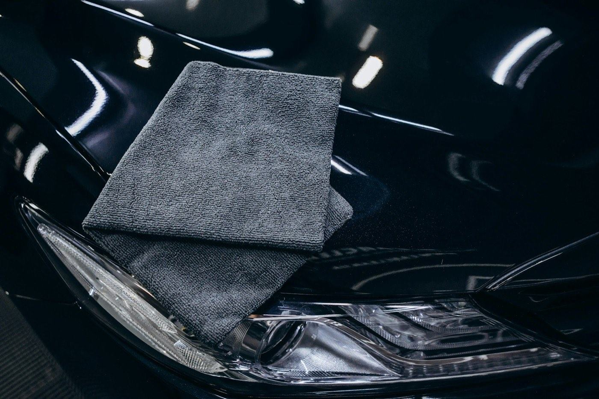
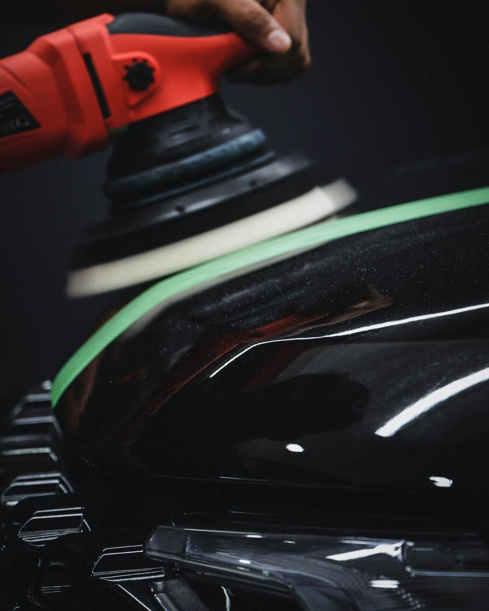

Sample job report
What you get back after the work.
Every job is written down as I go: what I found, what I did, what I used, how long it took and how to look after it. This is an example for a polish and coating job. A detail gets the same record without the paint readings, which are taken on paint correction and coating jobs.
The car and the job
- Vehicle
- Example: mid-size sedan, black
- Finish
- Uncoated gloss paint
- Service
- Paint correction, Grade I + Essential coating
- Hours on the car
- Example: 9.0 h, start to handover
Found at the walkaround. Example: wash swirls across the hood and doors, and two rock chips on the front edge of the hood. The chips were photographed and noted; polishing can't fix a chip. Booked lines. Checked one by one with the owner before I started. Nothing was added, and nothing on the quote needed to come off.
Before and after photos


The before set covers all four sides, the front and rear three-quarters, each wheel, the interior front and rear, and every damage spot. The after set repeats the same angles, under the same light where I can. Correction jobs add the 50/50 test spot: half polished, half not. No plates or people in any photo I'd ever use publicly. Your before & after photos come to you by text the same day.
Paint-gauge readings, panel by panel
On correction and coating jobs every panel is gauged before any machine work, and again as I go. The readings below are example readings, in microns (µm), to show the format.
| Panel | Before | After | Note |
|---|---|---|---|
| Hood | 121 | 118 | — |
| Roof | 104 | 102 | Thinnest panel; lightest pass |
| Trunk | 112 | 110 | — |
| Left front fender | 126 | 123 | — |
| Left front door | 131 | 128 | — |
| Left rear door | 128 | 126 | — |
| Left rear quarter | 133 | 130 | — |
| Right front fender | 124 | 121 | — |
| Right front door | 129 | 126 | — |
| Right rear door | 127 | 125 | — |
| Right rear quarter | 184 | 182 | Reads well above the rest: likely repainted. Test spot first, gentle pass |
A gauge reads the whole paint stack, not the clear coat alone, so I read the numbers as a comparison across your car. Why it matters, and how the gauges work: Paint depth gauging: why I measure before polishing.
Products used, and why
| Step | What I used | Why |
|---|---|---|
| Wash & decon | pH-neutral snow foam and wash, iron remover, tar remover, clay | Grit and bonded contamination come off before a polishing pad touches the paint |
| Test spot | A taped 50/50 line, starting with the finishing polish on a soft pad | Start with the least aggressive method and stop at the one that works. Clear coat doesn't grow back |
| Polish, Grade I | A fine-cut finishing polish on a polishing pad | The gentle step was enough on the test spot, so it went across the car |
| Panel wipe | A panel-prep wipe on every panel | Removes polish oils so the coating bonds to the paint |
| Coating | Essential: a single-layer ceramic coating, maker-rated up to 24 months | Easy-care protection for a daily driver kept a few years |
For a coating I also record the product, its lot number, the number of layers, the date and the warranty end date. The warranty end date goes on your receipt.
Inspection under detailing lights
The last pass on every job, at every level, is under detailing lights. On this example job:
- No streaks on any glass, inside or out, checked from the driver's seat facing the light
- No high spots or residue, checked at an angle under the light
- No dressing or sling on paint, glass, pedals or brake parts
- Every panel under the light, with 50/50 and after photos taken and the gauge readings filed
- Personal items back exactly where they were, seats back where they were
Dry and cure times, and care
I say the cure times out loud at handover, and the coated car gets the care card.
- Cure. Keep it in the garage and dry for the coating's cure window: 12 hours indoors for this coating (each coating's label decides). No washing for the label's period.
- Washing. pH-neutral soap only, no wax, no automatic brush washes.
- Drying. A blower or a plush towel. Don't let water air-dry in the sun, and point sprinklers away from the car.
- Bird droppings. Off the same day.
- Check-in. A free check-in about 30 days after installation.
- Once a year. The Annual Coating Service within 30 days of each anniversary keeps the warranty.
If something isn't right
Not happy? Tell me within 48 hours and I'll come back and make it right. Send a photo and I'll reply the same day.